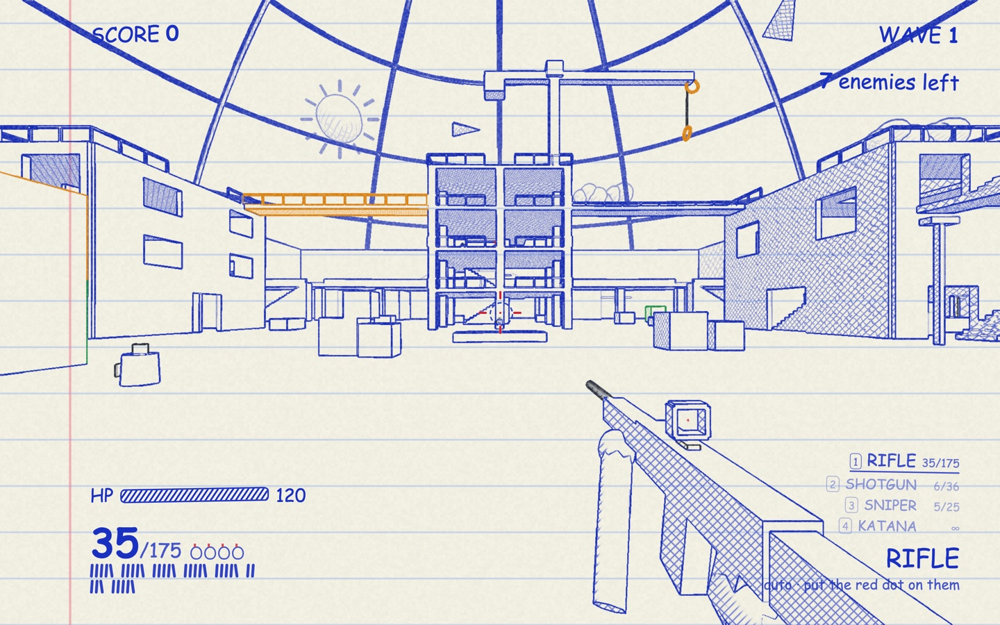
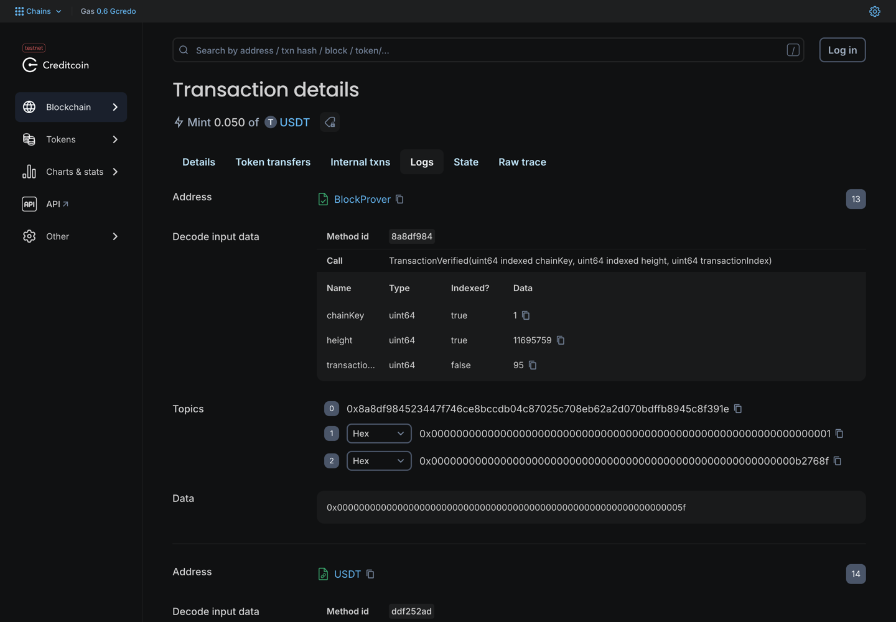

A ballpoint-doodle survival shooter where the reward is real,
and the chain proves you earned it before it pays.
Creditcoin Testnet 102031 Attestcoin Protocol Gaming track
riguwa.xyz
github.com/Riguwa-Game/riguwagame
The asset is trustless. The claim behind it is not.
That gap is the whole problem, and it is the only thing this project set out to close.
A first-person survival shooter drawn in blue ballpoint on lined paper and rendered entirely in code. No models, no textures, no sound files.
| Stake to play | Stake tCTC or USDT. Wave 5 pays 1.5x, wave 10 pays 2x, wave 15 pays 3x. Below wave 5 the stake joins the pool. There is no free play. |
|---|---|
| Cross-chain entry | Pay on Ethereum Sepolia and hold no tCTC. The Attestcoin block-prover precompile verifies that payment inside the same Creditcoin transaction that credits you. |
| The chain seeds the run | startRun issues a seed from blockhash.
The waves you faced were committed before you played. |
| Solvency by construction | startRun reserves the full payout ceiling before
accepting a stake. The contract can never owe more than it holds. |

Every outline, every enemy and every 8-bit music track is procedural.
The seed for this run came from blockhash before a single enemy spawned.
A player pays on Sepolia. Nothing is bridged by a trusted party. A contract on Creditcoin proves the source transaction itself and acts on its logs.
Sepolia ink-monitor relayer Creditcoin
payEntry()
emits ArenaEntryPaid
|
+-- picked up -->
waitUntilHeightAttested(1, h)
ProofBuilder.getProof(txHash)
|
+-- execute(...) --> DoodleGateASC
1. dedupe by queryId
2. BlockProver 0x...0FD2 verifies
3. require receiptStatus == 1
4. decode logs
5. require emitter == sourceGate
6. mint credit
Steps 1 to 6 run synchronously, in one Creditcoin transaction. The relayer is a courier, not an oracle: it chooses when to deliver a proof and nothing else.
if (receipt.receiptStatus != 1)
revert SourceTransactionFailed();
The block prover proves a transaction was included in a real block. It does not prove it succeeded. Without this, a reverted payment still mints credit.
if (_s().sourceGate[chainKey] != emitter
|| emitter == address(0))
revert UnknownEmitter(chainKey, emitter);
Event signatures are public. Without this, anyone deploys a look-alike contract on Sepolia and mints themselves unlimited credit.
That second one is the most important line in the repository.
Both have dedicated negative tests, alongside replay protection keyed on
keccak256(chainKey, blockHeight, txIndex).

The relay transaction's first log. Emitter is BlockProver, the precompile at
0x...0FD2, carrying chainKey 1 and the Sepolia height it verified.
We attest nothing. The chain does, and the contract refuses to act until it has.
| Cross-chain entry works | Sepolia payEntry 0x9ff6a146
relayed to Creditcoin 0x021ea75f. 0.0005 ETH in, 0.05 USDT credited. |
|---|---|
| A staked run paid out | settleRun 0x322cf5dc. 1 tCTC staked,
wave 12 reached, 2 tCTC paid. |
| The loop closes itself | Stake 0x616a462e observed, signed and settled by
ink-monitor in 0x1d1d4f88, with no human in the path. |
| Contracts | All nine source-verified on Blockscout. UUPS proxies with ERC-7201 namespaced storage, solc 0.8.30, EVM target cancun. |
| Tests | 186 passing. 139 Foundry at 95.19% lines and 98.04% functions, 35 server, 12 game. |
A staking game that can promise more than it holds is not a staking game. It is a queue.
uint256 ceiling = (amount * $.maxMultiplierBps) / BPS_DENOMINATOR; if (p.free < ceiling) revert PoolTooSmall(p.free, ceiling); p.free -= ceiling; p.reserved += ceiling; p.activeStake += amount;
The full 3x payout ceiling is reserved before the stake is accepted. The invariant is asserted under fuzzing rather than written in a comment:
balance(token) == free + reserved + activeStake
| The monitor is trusted today | Threshold 1. It can sign a wrong result
within the bounds it checks. The contract already verifies N of M EIP-712 attestations, so a peer
quorum is setAttestor plus setThreshold, no redeploy. A test proves it. |
|---|---|
| Writability is not used | Creditcoin to other chains is still under third-party audit.
ETH paid on Sepolia stays in DoodleGate; withdraw marks the seam. |
| blockhash is a weak seed | Fine for wave composition, which commits before play and is verified after. It is not a lottery and is not used as one. |
| USDT here is a mock | Testnet-only, deployed by this project, no value, unaffiliated with Tether. |
| Caps are small on purpose | 10 tCTC per run, so one player cannot drain a public testnet pool. |
riguwa.xyz
github.com/Riguwa-Game/riguwagame · Creditcoin Testnet 102031